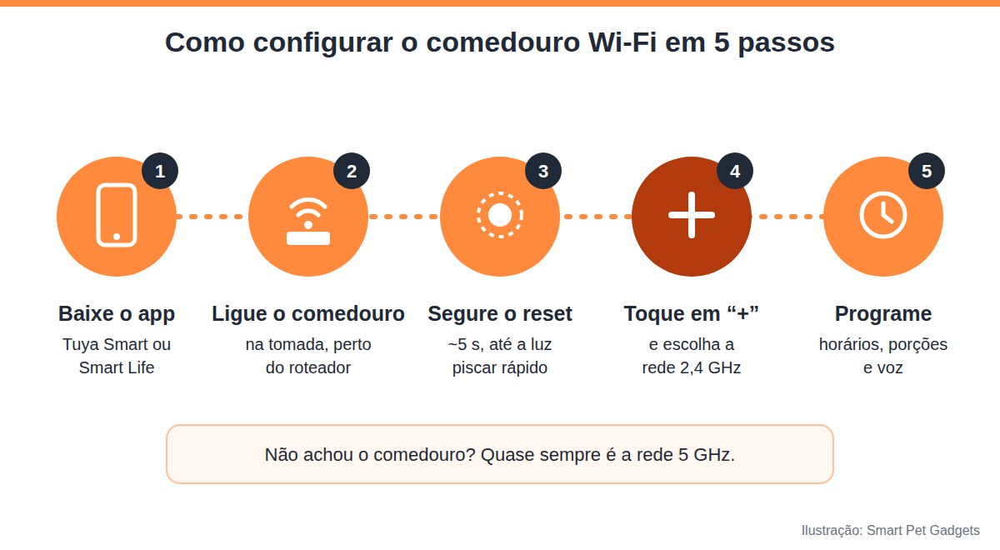
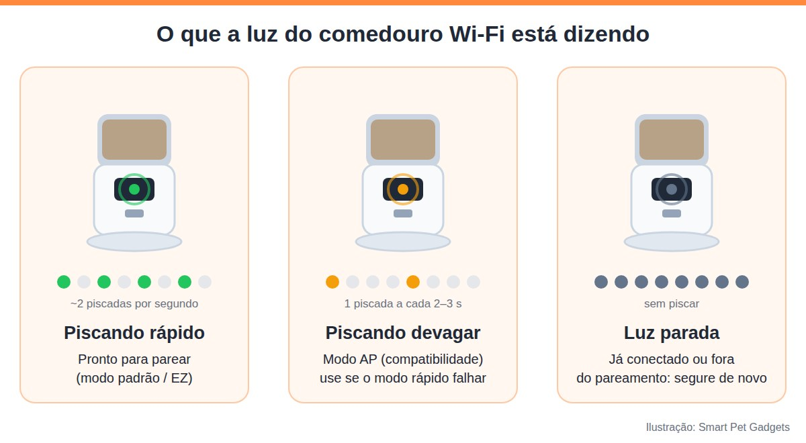
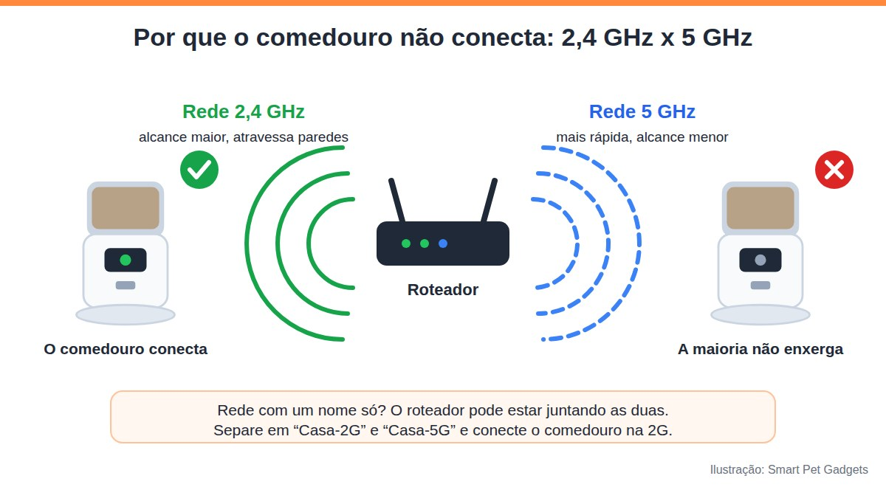
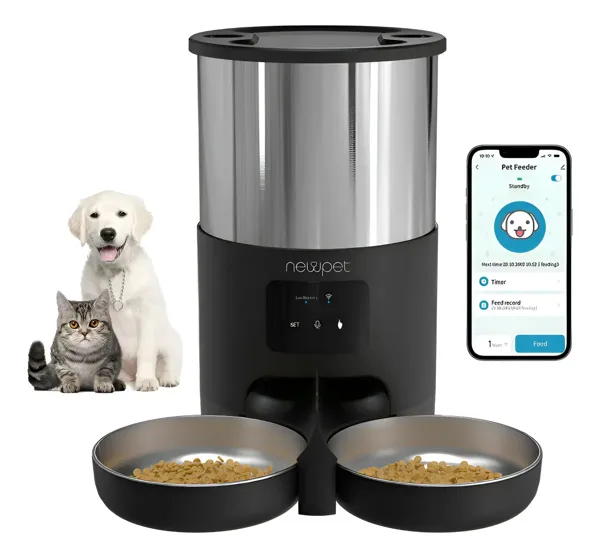

Como Configurar Comedouro Wi-Fi no App Tuya: Passo a Passo
Para configurar um comedouro automático Wi-Fi, baixe o app Tuya Smart (ou o Smart Life, que funciona igual), ligue o comedouro perto do roteador, coloque o aparelho em modo de pareamento segurando o botão de reset até a luz piscar rápido, toque em "+" › Adicionar dispositivo e escolha uma rede 2,4 GHz. Quando o comedouro não conecta, a causa é quase sempre a rede de 5 GHz. Depois de pareado, é só programar horários e porções na tela do aparelho.
Resumo em 5 passos
- Baixe o Tuya Smart ou o Smart Life e crie uma conta.
- Ligue o comedouro na tomada, perto do roteador.
- Segure o botão de reset (ou o de alimentação manual) por cerca de 5 segundos, até a luz piscar rápido.
- No app, toque em "+" › Adicionar dispositivo, escolha a rede 2,4 GHz e digite a senha.
- Depois de pareado, programe horários, porções e a mensagem de voz.

A maioria dos comedouros automáticos com Wi-Fi vendidos no Brasil, como o VDRBG 4L Wi-Fi e os modelos Newpet com app, usa a plataforma Tuya. Por isso o processo é praticamente o mesmo entre marcas diferentes. Ainda não comprou e está em dúvida se precisa de Wi-Fi? Veja comedouro automático com ou sem Wi-Fi. Para escolher o modelo, compare o melhor comedouro automático para cachorro e o melhor alimentador automático para gatos.
Black Friday 2026: o alimentador Newpet com app caiu 38% desde 14/11, e o Xiaomi 5L Wi-Fi subiu 23%. Veja o que subiu e o que caiu antes da Black Friday.
Qual Aplicativo Usar no Comedouro Automático?
Confira a caixa ou o manual: quase sempre há um QR code que leva ao app certo. Os casos mais comuns:
| App | Quando usar |
|---|---|
| Tuya Smart | A maioria dos comedouros genéricos e de marcas como Newpet e VDRBG. O manual costuma trazer o logo da Tuya ou a frase "Tuya app". |
| Smart Life | É da mesma empresa e usa a mesma nuvem da Tuya. Um comedouro compatível com Tuya funciona no Smart Life, e vice-versa. Use só um dos dois para não duplicar a configuração. |
| App da própria marca | Alguns modelos usam app próprio: o Hi by Geonav usa o Geonav Home, e o Xiaomi usa o Mi Home. Nesses casos, os passos abaixo valem como referência, mas os menus mudam. |
Passo a Passo: Como Configurar o Comedouro no App Tuya
1. Baixe o App Tuya Smart
Ele é gratuito para Android e iOS. Crie uma conta com e-mail ou faça login, se já usa o app com outro aparelho. Na primeira abertura, o app pede para criar uma "casa"; defina a localização dela, porque o horário do comedouro depende disso (veja ração na hora errada).
2. Ligue o Comedouro Perto do Roteador
Ligue o aparelho na tomada e deixe-o a poucos metros do roteador só durante a configuração, para reduzir falhas. Depois de pareado, você pode levá-lo para o lugar definitivo, desde que o sinal Wi-Fi chegue bem lá.
3. Confirme que a Rede é de 2,4 GHz
Este é o ponto de falha mais comum: a maioria dos comedouros com Tuya só reconhece redes de 2,4 GHz. Roteadores que juntam 2,4 e 5 GHz com o mesmo nome (band steering) são a causa mais frequente de o app não achar o aparelho (Gênio da Casa). Se o nome da sua rede não indica a frequência, veja como separar a rede 2,4 GHz.
4. Coloque o Comedouro em Modo de Pareamento
Na maioria dos modelos, segure o botão de reset ou o de alimentação manual por cerca de 5 segundos, até a luz indicadora piscar rápido. O botão e o tempo variam, então confira o manual do seu modelo. Detalhes em modo de pareamento.
5. Adicione o Dispositivo no App
Toque no "+" no canto superior direito e em Adicionar dispositivo. Com o Bluetooth e a localização do celular ligados, o app costuma encontrar o comedouro sozinho. Se não encontrar, entre em Pequenos eletrodomésticos e escolha o tipo alimentador de pet (o nome muda conforme a versão do app), ou use o ícone de QR code se a caixa tiver um. Em seguida, selecione a rede 2,4 GHz, digite a senha e aguarde a confirmação.
6. Programe Horários e Porções
Na tela do comedouro, entre em Plano de alimentação (ou "Feed plan"), toque em Adicionar, escolha o horário, os dias da semana e o número de porções. Na maioria dos modelos, cada porção tem cerca de 5 g e dá para programar de 1 a 40 porções por refeição. Antes de salvar, use o botão de alimentação manual ("Feed") para conferir quanto sai em uma porção.
7. Compartilhe o Acesso (Opcional)
Para outra pessoa da casa também controlar o comedouro, abra as configurações do aparelho (ícone de lápis ou engrenagem), entre em Compartilhar dispositivo e convide pelo e-mail ou pela conta dela no app (Gênio da Casa).
Como Colocar o Comedouro em Modo de Pareamento?
O app só encontra o comedouro quando ele está esperando conexão. Nos aparelhos Tuya, a luz indicadora mostra em que modo ele está:

- Piscando rápido (cerca de duas vezes por segundo): modo padrão de pareamento, chamado de modo EZ. É o que o app usa por padrão.
- Piscando devagar (uma vez a cada 2 ou 3 segundos): modo AP, ou de compatibilidade. O comedouro cria uma rede própria, e você conecta o celular a ela durante o processo. Use quando o modo rápido falhar várias vezes.
- Luz parada: o aparelho já está conectado a uma rede ou não entrou em pareamento. Segure o botão de novo.
Para alternar entre os modos, segure o botão outra vez pelo mesmo tempo. No app, o modo AP costuma aparecer na tela de pareamento como "Modo de compatibilidade" ou "Modo AP".
Como Separar a Rede 2,4 GHz no Roteador?

Se o seu Wi-Fi aparece com um nome só, o roteador provavelmente junta as duas frequências. Há três saídas:
- Separar as redes no roteador: acesse a página de configuração pelo endereço e a senha da etiqueta do aparelho, procure a opção de rede única, band steering ou "Smart Connect" e desative. Dê nomes diferentes às redes, como "Casa-2G" e "Casa-5G". Nos roteadores entregues por operadoras, essa opção nem sempre fica liberada; nesse caso, o suporte da operadora pode separar as redes para você.
- Afastar-se do roteador: o sinal de 5 GHz alcança menos. A alguns cômodos de distância, o celular costuma cair para 2,4 GHz, e o pareamento passa.
- Usar o modo AP (luz piscando devagar), que é mais tolerante a redes mistas.
Problemas Comuns e Soluções
| Problema | Causa provável | Solução |
|---|---|---|
| App não encontra o dispositivo | Rede de 5 GHz ou comedouro fora do modo de pareamento | Usar rede 2,4 GHz e segurar o reset até a luz piscar rápido |
| Pareamento para em 99% ou dá erro de senha | Senha digitada errada ou com caracteres especiais | Conferir maiúsculas e minúsculas; se possível, use uma senha só com letras e números |
| iPhone não acha o comedouro | Permissão de rede local desativada | Ajustes › Privacidade e Segurança › Rede Local › ativar o Tuya Smart; ligar também Bluetooth e localização |
| Conexão cai com frequência | Sinal fraco no local de instalação | Testar o sinal antes de instalar definitivamente ou usar um repetidor |
| Dispositivo aparece "offline" no app | Roteador reiniciou, trocou de canal ou faltou energia | Desligar e ligar o comedouro; se não voltar, refazer o pareamento |
| Porção não bate com o programado | Grão grande ou irregular para o mecanismo | Usar ração do tamanho indicado no manual (vários modelos aceitam grãos de 5 a 12 mm) |
| Notificações não chegam | Permissão de notificação desativada | Ativar as notificações do app nas configurações do celular |
| App pede para parear tudo de novo | Troca de roteador ou de senha do Wi-Fi | Refazer o pareamento do zero; o aparelho não migra a rede antiga sozinho |
Comedouro Soltando Ração na Hora Errada: Como Corrigir?
Quando a refeição sai uma ou mais horas antes ou depois do programado, o problema quase sempre é o fuso horário. O comedouro pega a hora pela internet com base na localização da "casa" cadastrada no app. Abra o app, vá em Eu › Gerenciamento da casa, confira a localização da casa e corrija. Depois, desligue e ligue o comedouro para sincronizar. Em modelos com relógio no painel, ajuste também a hora no próprio aparelho, porque ele usa essa hora quando fica sem Wi-Fi.
Como Gravar a Mensagem de Voz e Alimentar pelo App
Nos modelos com alto-falante, a tela do comedouro tem um ícone de microfone ou a opção Gravação. Toque, segure e fale. A mensagem dura até 10 ou 12 segundos, conforme o modelo, e toca na hora de cada refeição. Gravar com a voz de quem o pet conhece ajuda na adaptação. Para soltar ração fora do horário, use o botão Alimentar ("Feed") e escolha quantas porções.
O App Não Abre ou Trava: o que Verificar
Quando o problema é o próprio aplicativo travando ou fechando sozinho, confirme primeiro se há atualização na loja de aplicativos: versões antigas do Tuya Smart costumam ficar instáveis depois de atualizações do sistema do celular. Se já estiver atualizado, force o encerramento, reinicie o celular e tente de novo.
Se continuar travando, limpe o cache (no Android: Configurações › Apps › Tuya Smart › Armazenamento) ou reinstale o app. A reinstalação não apaga a configuração do comedouro, que fica salva na nuvem: ele volta a aparecer depois do novo login.
Onde Encontrar o Manual e o Suporte?
- Manual: vem na caixa, quase sempre com o QR code do app. Se perdeu, procure o modelo no site da marca ou peça o PDF ao vendedor.
- Vendedor: quem comprou no Mercado Livre pode falar com o vendedor pela página da compra, que é o caminho mais rápido para defeito ou troca dentro da garantia.
- Suporte do app: no Tuya Smart, a aba Eu tem a área de ajuda e feedback, que também serve para enviar o registro de erro.
- Fabricante: marcas com loja oficial, como a New Pet, atendem pelo canal da loja.
Configurando Vários Comedouros na Mesma Casa
O app Tuya Smart lida bem com mais de um comedouro: cada aparelho aparece como um cartão separado na tela inicial, com nome, horários e histórico próprios. Renomeie cada um assim que parear, com o nome do pet ou do cômodo, para não confundir as programações. Se a casa tem vários gatos comendo do mesmo aparelho, veja também o comedouro automático para dois gatos.
Se vários adultos cuidam dos pets, compartilhar o acesso (passo 7) evita duas armadilhas: duas pessoas programando porções diferentes sem saber, ou ninguém percebendo que a ração acabou porque cada um achava que o outro estava de olho.
Privacidade e Permissões do App
O Tuya Smart pede acesso à localização durante a configuração porque precisa dela para identificar as redes Wi-Fi por perto, não para rastrear o usuário. Também pede permissão de notificações, usada para avisos de refeição, ração acabando ou queda de conexão. O app não precisa de acesso a contatos, câmera (exceto para ler QR code) ou mensagens para funcionar.
Ainda vai comprar um comedouro com app Tuya?

Newpet Wi-Fi 5L com app Tuya
Reservatório de 5 litros, duas tigelas e controle pelo app Tuya. Vendido pela loja oficial New Pet.
R$ 318,80 no Mercado Livre, consultado em 15/11/2026
Ver preço atual no Mercado Livre →
Newpet 6L com 3 tigelas (app Tuya)
Porção separada para cada tigela, até 10 refeições por dia e mecanismo anti-entupimento. Feito para casa com vários gatos.
R$ 328,90 no Mercado Livre, consultado em 15/11/2026
Ver preço atual no Mercado Livre →Quer comparar mais modelos? Veja os 6 melhores comedouros automáticos para cães e gatos, ou os rankings só para cachorro e só para gato.
Links de afiliado: podemos receber uma comissão, sem custo extra para você.
Conclusão
Configurar o app de um comedouro Wi-Fi é simples na maioria dos casos, desde que a rede seja de 2,4 GHz e o aparelho esteja em modo de pareamento. Se o pareamento falhar, tente o modo AP. Se a ração sair na hora errada, confira o fuso da casa no app. Se nada disso resolver, fale com o vendedor ou com o suporte da marca. Tem outros aparelhos pet no Wi-Fi? Veja como configurar a câmera pet no Wi-Fi: os erros de rede são parecidos.
Perguntas Frequentes
Qual é o aplicativo do comedouro automático?
A maioria dos comedouros Wi-Fi vendidos no Brasil usa o Tuya Smart, que pode ser trocado pelo Smart Life, da mesma empresa. Alguns modelos têm app próprio, como o Hi by Geonav (Geonav Home) e o Xiaomi (Mi Home). O QR code na caixa ou no manual indica o app certo.
Por que o app Tuya não encontra o meu comedouro?
Na maioria dos casos, a rede Wi-Fi está em 5 GHz ou o comedouro não está em modo de pareamento. Use uma rede de 2,4 GHz e segure o botão de reset até a luz piscar rápido. No iPhone, ative também a permissão de rede local para o app.
Como resetar o comedouro automático Wi-Fi?
Na maioria dos modelos, segure o botão de reset ou o de alimentação manual por cerca de 5 segundos, até a luz piscar rápido. Isso apaga a rede salva e deixa o aparelho pronto para parear de novo. O botão e o tempo variam conforme o modelo, então confira o manual.
O comedouro funciona se a internet cair?
Na maioria dos modelos Tuya, sim: os horários ficam salvos no aparelho e as refeições continuam saindo. Sem internet, o que você perde é o controle pelo celular e as notificações.
Por que o comedouro solta ração na hora errada?
Quase sempre é o fuso horário da casa cadastrada no app. Confira a localização em Eu › Gerenciamento da casa, corrija e reinicie o comedouro. Em modelos com relógio no painel, ajuste também a hora no aparelho.
Dá para usar o comedouro no Wi-Fi de 5 GHz?
A maioria não funciona em 5 GHz. Alguns modelos mais novos são dual band, então confira a ficha do produto. Se o roteador junta as duas redes num nome só, separe-as nas configurações ou use o modo AP de pareamento.
Preciso manter o comedouro perto do roteador depois de configurado?
Não. A proximidade só ajuda durante o pareamento. Depois de conectado, o comedouro pode ir para o lugar definitivo, desde que o sinal Wi-Fi chegue bem até lá.
Como outra pessoa da casa pode controlar o comedouro?
Nas configurações do aparelho, no app, use a opção Compartilhar dispositivo e convide a pessoa pelo e-mail ou pela conta dela no Tuya Smart. Ela passa a ver e controlar o comedouro pelo próprio celular.
O app do comedouro tem acesso a quais permissões do celular?
O app Tuya normalmente pede acesso à localização, para encontrar a rede Wi-Fi, e às notificações, para os alertas do comedouro. Ele não precisa de acesso a contatos ou mensagens para funcionar.
O que fazer se o app Tuya não abrir ou travar?
Feche o app completamente, verifique se há atualização na loja de aplicativos e reinicie o celular. Se continuar, limpe o cache ou reinstale o app: a configuração do comedouro fica salva na nuvem e volta depois do login.
Veja nossa política editorial e como verificamos as fontes citadas neste artigo.
🐾 Newpet Wi-Fi 5L com app Tuya: veja o preço de hoje.
Ver no Mercado LivreLink de afiliado: podemos receber uma comissão por compras feitas através deste link, sem custo adicional para você.